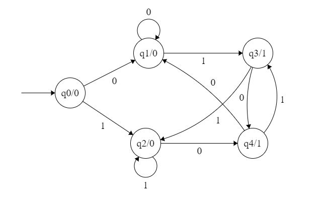
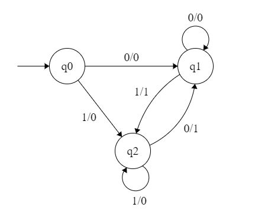
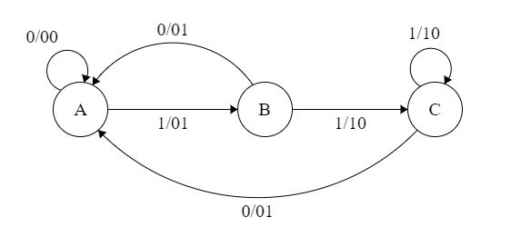

Moore and Mealy Machines are Transducers that help in producing outputs based on the input of the current state or previous state. In this article we are going to discuss Moore Machines and Mealy Machines, the difference between these two machines as well as Conversion from Moore to Mealy and Conversion from Mealy to Moore Machines.
Moore Machines are finite state machines with output value and its output depends only on the present state. It can be defined as (Q, q0, ∑, O, δ, λ) where:

In the Moore machine shown in Figure 1, the output is represented with each input state separated by /. The length of output for a Moore Machine is greater than input by 1.
Mealy machines are also finite state machines with output value and their output depends on the present state and current input symbol. It can be defined as (Q, q0, ∑, O, δ, λ’) where:

In the mealy machine shown in Figure 1, the output is represented with each input symbol for each state separated by /. The length of output for a mealy machine is equal to the length of input.
| Aspect | Moore Machines | Mealy Machines |
|---|---|---|
| Output | Outputs depend only on the current state. | Outputs depend on the current state and input. |
| Number of States | Tends to require more states due to separate output behavior. | Might require fewer states as outputs are tied to transitions. |
| Response Time | Slower response to input changes as outputs update on state changes. | Faster response to input changes due to immediate output updates. |
| Complexity | Can be simpler due to separation of output behavior. | Can be more complex due to combined state-input cases. |
| Present State | Input=0 | Input=1 |
|---|---|---|
| q0 | q1 | q2 |
| q1 | q1 | q2 |
| q2 | q1 | q2 |
| Present State | Input | Next State | Output |
|---|---|---|---|
| q0 | 0 | q1 | 0 |
| 1 | q2 | 0 | |
| q1 | 0 | q1 | 0 |
| 1 | q2 | 1 | |
| q2 | 0 | q1 | 1 |
| 1 | q2 | 0 |
Table 1
Step 1. First, find out those states which have more than 1 output associated with them. q1 and q2 are the states which have both output 0 and 1 associated with them.
Step 2 Create two states for these states. For q1, two states will be q10 (a state with output 0) and q11 (a state with output 1). Similarly, for q2, two states will be q20 and q21.
Step 3: Create an empty Moore machine with a newly generated state. For more machines, Output will be associated with each state irrespective of inputs.
| Present State | Next State | Output |
|---|---|---|
| q0 | ||
| q10 | ||
| q11 | ||
| q20 | ||
| q21 |
Table 2 Step 4: Fill in the entries of the next state using the mealy machine transition table shown in Table 1. For q0 on input 0, the next state is q10 (q1 with output 0). Similarly, for q0 on input 1, the next state is q20 (q2 with output 0). For q1 (both q10 and q11) on input 0, the next state is q10. Similarly, for q1(both q10 and q11), next state is q21. For q10, the output will be 0 and for q11, the output will be 1. Similarly, other entries can be filled.
| Present State | Next State (Input=0) | Next State (Input=1) | Output |
|---|---|---|---|
| q0 | q10 | q20 | 0 |
| q10 | q10 | q21 | 0 |
| q11 | q10 | q21 | 1 |
| q20 | q11 | q20 | 0 |
| q21 | q11 | q20 | 1 |
Table 3 This is the transition table of the Moore machine shown in Figure 1
et us take the Moore machine of Figure 1 and its transition table is shown in Table 3. Step 1. Construct an empty mealy machine using all states of the Moore machine as shown in Table 4.
| Present State | Input=0 | Input=1 | ||
|---|---|---|---|---|
| Next State | Output | Next State | Output | |
| q0 | ||||
| q10 | ||||
| q11 | ||||
| q20 | ||||
| q21 | ||||
Table 4 Step 2:Next state for each state can also be directly found from Moore machine transition Table as:
| Present State | Input=0 | Input=1 |
|---|---|---|
| q0 | q10 | q20 |
| q10 | q10 | q21 |
| q11 | q10 | q21 |
| q20 | q11 | q20 |
| q21 | q11 | q20 |
| Present State | Input | Next State | Output |
|---|---|---|---|
| q0 | 0 | q10 | |
| q0 | 1 | q20 | |
| q10 | 0 | q10 | |
| q10 | 1 | q21 | |
| q11 | 0 | q10 | |
| q11 | 1 | q21 | |
| q20 | 0 | q11 | |
| q20 | 1 | q20 | |
| q21 | 0 | q11 | |
| q21 | 1 | q20 |
Table 5
Step 3: As we can see output corresponds to each input in the Moore machine transition table. Use this to fill the Output entries.
Example: Output corresponding to q10, q11, q20 and q21 are 0, 1, 0 and 1 respectively.
| Present State | Input=0 | Input=1 |
|---|---|---|
| q0 | q10 | q20 |
| q10 | q10 | q21 |
| q11 | q10 | q21 |
| q20 | q11 | q20 |
| q21 | q11 | q20 |
| Present State | Input | Next State | Output |
|---|---|---|---|
| q0 | 0 | q10 | 0 |
| q0 | 1 | q20 | 0 |
| q10 | 0 | q10 | 0 |
| q10 | 1 | q21 | 1 |
| q11 | 0 | q10 | 0 |
| q11 | 1 | q21 | 1 |
| q20 | 0 | q11 | 1 |
| q20 | 1 | q20 | 0 |
| q21 | 0 | q11 | 1 |
| q21 | 1 | q20 | 0 |
Table 6 Step 4: As we can see from Table 6, q10 and q11 are similar to each other (same value of next state and Output for different Inputs). Similarly, q20 and q21 are also similar. So, q11 and q21 can be eliminated./p>
| Present State | Input=0 | Input=1 |
|---|---|---|
| q0 | q10 | q20 |
| q10 | q10 | q21 |
| q20 | q11 | q20 |
| Present State | Input | Next State | Output |
|---|---|---|---|
| q0 | 0 | q10 | 0 |
| q0 | 1 | q20 | 0 |
| q10 | 0 | q10 | 0 |
| q10 | 1 | q21 | 1 |
| q20 | 0 | q11 | 1 |
| q20 | 1 | q20 | 0 |
Table 7 This is the same mealy machine shown in Table 1. So we have converted Mealy to Moore machine and converted back Moore to Mealy.
Example: The Finite state machine is described by the following state diagram with A as starting state, where an arc label is x / y and x stands for 1-bit input and y stands for 2-bit output.

Outputs the sum of the present and the previous bits of the input.
Outputs 01 whenever the input sequence contains 11.
Outputs 00 whenever the input sequence contains 10.
None of these.
Solution: Let us take different inputs and its output and check which option works:
Input: 01
Output: 00 01 (For 0, Output is 00 and state is A. Then, for 1, Output is 01 and state will be B)
Input: 11
Output: 01 10 (For 1, Output is 01 and state is B. Then, for 1, Output is 10 and state is C)
As we can see, it is giving the binary sum of the present and previous bit. For the first bit, the previous bit is taken as 0.